Artifact Rejection — CalmSync Artifact Dataset#
Eye Blinks, Head Nodding & Jaw Clenching#
This notebook applies multiple artifact removal techniques to real CalmSync EEG recordings containing three distinct artifact types:
Artifact |
Source |
EEG Signature |
|---|---|---|
Eye Blinks |
Ocular muscles |
Large, slow deflections (~0.5–2 Hz) concentrated at frontal electrodes |
Head Nodding |
Body movement + electrode shift |
Low-frequency drift with abrupt baseline shifts |
Jaw Clenching |
EMG from masseter/temporalis |
High-frequency broadband burst (>20 Hz) |
We apply five decomposition methods and compare their ability to separate artifacts from neural signal:
Wavelet Transform (WT) — soft thresholding
EMD — Empirical Mode Decomposition
EEMD — Ensemble EMD
CEEMDAN — Complete Ensemble EMD with Adaptive Noise
VMD — Variational Mode Decomposition
1. Load & Preprocess#
All three recordings come from the same CalmSync device (2-channel, ~240 Hz). We:
Convert ADC values to µV
Apply a bandpass filter (0.5–45 Hz) to remove DC drift and high-frequency noise
Apply a 50 Hz notch filter to remove line noise
Extract the Fp1 channel (channel 0)
Show code cell source
import numpy as np
import json
import matplotlib.pyplot as plt
import pywt
from scipy import signal
from scipy.signal import welch
from PyEMD import EMD, EEMD, CEEMDAN
from vmdpy import VMD
# ── Filter helper ────────────────────────────────────────────────────────────
def preprocess(x, fs, hp=0.5, lp=45.0, notch=50.0):
"""Bandpass + 50 Hz notch filter, then DC removal."""
sos_bp = signal.butter(4, [hp, lp], btype='band', fs=fs, output='sos')
x = signal.sosfiltfilt(sos_bp, x)
b, a = signal.iirnotch(notch, Q=30, fs=fs)
x = signal.filtfilt(b, a, x)
x -= x.mean()
return x
def load_calmsync(path):
"""Load CalmSync JSON, convert to µV, preprocess."""
with open(path) as f:
d = json.load(f)
fs = d['samplingRateHz']
raw = np.array(d['data'], dtype=float)
# ADC → µV
fp1 = ((raw[0] - 512) * 3.3 / 1024) / 1100 * 1e6
fp1 = preprocess(fp1, fs)
t = np.arange(len(fp1)) / fs
return fp1, t, fs
# ── Load all three artifact types ────────────────────────────────────────────
base = r'../calmsync_artifactdata'
blink_sig, blink_t, fs = load_calmsync(f'{base}/eyeblinks/eeg_2026-01-14T17-07-28_2026-01-14T17-08-27.json')
nod_sig, nod_t, _ = load_calmsync(f'{base}/Headnodding/eeg_2026-01-14T17-14-40_2026-01-14T17-15-41.json')
jaw_sig, jaw_t, _ = load_calmsync(f'{base}/jawclenching/eeg_2026-01-14T17-11-51_2026-01-14T17-12-54.json')
artifacts = {
'Eye Blinks': (blink_sig, blink_t),
'Head Nodding': (nod_sig, nod_t),
'Jaw Clenching': (jaw_sig, jaw_t),
}
print(f'Sampling rate: {fs:.1f} Hz')
for name, (sig, t) in artifacts.items():
print(f'{name}: {len(sig)} samples, {t[-1]:.1f}s, '
f'range: [{sig.min():.1f}, {sig.max():.1f}] µV')
Sampling rate: 239.8 Hz
Eye Blinks: 14162 samples, 59.1s, range: [-234.8, 236.3] µV
Head Nodding: 14622 samples, 61.0s, range: [-1073.1, 559.6] µV
Jaw Clenching: 15229 samples, 63.5s, range: [-660.2, 671.9] µV
2. Raw EEG — All Three Artifacts#
Visual comparison of the three artifact types. Notice the distinct morphologies:
Eye blinks: sharp, high-amplitude spikes
Head nodding: slow baseline wandering
Jaw clenching: dense high-frequency bursts
Show code cell source
fig, axes = plt.subplots(3, 1, figsize=(14, 8), sharex=False)
colors = {'Eye Blinks': '#e74c3c', 'Head Nodding': '#2ecc71', 'Jaw Clenching': '#9b59b6'}
for ax, (name, (sig, t)) in zip(axes, artifacts.items()):
ax.plot(t, sig, color=colors[name], linewidth=0.5)
ax.set_title(f'{name} — Fp1', fontsize=12, fontweight='bold')
ax.set_ylabel('µV')
ax.grid(alpha=0.3)
axes[-1].set_xlabel('Time (s)')
fig.suptitle('Raw Filtered EEG — Three Artifact Types (CalmSync Fp1)',
fontsize=14, y=1.01)
plt.tight_layout()
plt.show()
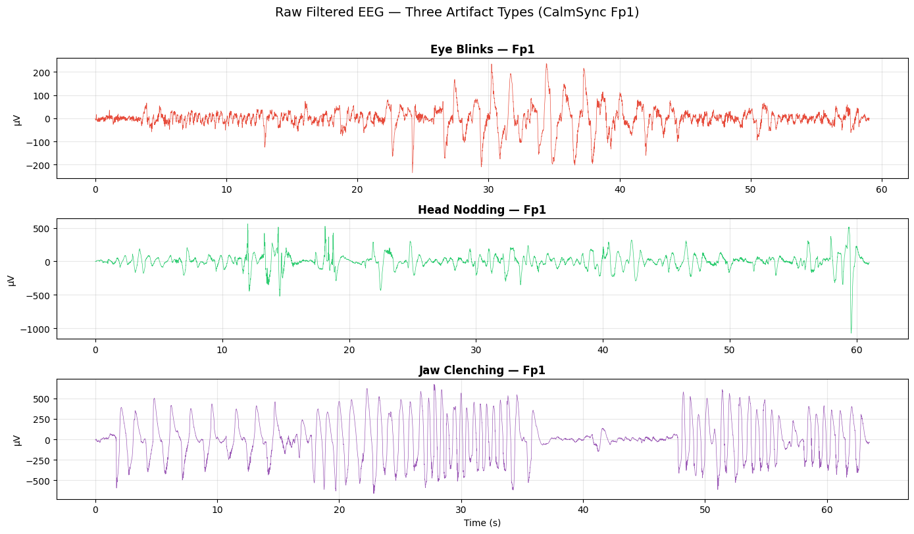
3. Wavelet Transform (Soft Thresholding)#
We decompose with the db4 wavelet (5 levels), estimate noise from the finest detail coefficients using the MAD estimator, and apply soft thresholding. The denoised signal is then reconstructed.
Show code cell source
# ═══════════════════════════════════════════════════════════════════════
# WAVELET THRESHOLDING — 6 Methods Compared
# ═══════════════════════════════════════════════════════════════════════
# --- Method 1: Fixed Universal (VisuShrink) ---
def wt_fixed(sig, wavelet='db4', level=5):
coeffs = pywt.wavedec(sig, wavelet, level=level)
sigma = np.median(np.abs(coeffs[-1])) / 0.6745
threshold = sigma * np.sqrt(2 * np.log(len(sig)))
ct = [coeffs[0]] + [pywt.threshold(c, value=threshold, mode='soft') for c in coeffs[1:]]
return pywt.waverec(ct, wavelet)[:len(sig)]
# --- Method 2: Per-Level Adaptive ---
def wt_perlevel(sig, wavelet='db4', level=5):
coeffs = pywt.wavedec(sig, wavelet, level=level)
ct = [coeffs[0]]
for d in coeffs[1:]:
sigma_j = np.median(np.abs(d)) / 0.6745
thresh_j = sigma_j * np.sqrt(2 * np.log(len(d)))
ct.append(pywt.threshold(d, value=thresh_j, mode='soft'))
return pywt.waverec(ct, wavelet)[:len(sig)]
# --- Method 3: Level-Dependent Scaling (alpha_j) ---
def wt_scaled(sig, wavelet='db4', level=5):
alphas = [0.5, 0.7, 1.0, 1.3, 1.5] # D5→D1: low freq gets gentle threshold
coeffs = pywt.wavedec(sig, wavelet, level=level)
ct = [coeffs[0]]
for d, alpha in zip(coeffs[1:], alphas):
sigma_j = np.median(np.abs(d)) / 0.6745
thresh_j = alpha * sigma_j * np.sqrt(2 * np.log(len(d)))
ct.append(pywt.threshold(d, value=thresh_j, mode='soft'))
return pywt.waverec(ct, wavelet)[:len(sig)]
# --- Method 4: BayesShrink ---
def wt_bayes(sig, wavelet='db4', level=5):
coeffs = pywt.wavedec(sig, wavelet, level=level)
sigma_n = np.median(np.abs(coeffs[-1])) / 0.6745
ct = [coeffs[0]]
for d in coeffs[1:]:
sigma_d2 = np.mean(d**2)
sigma_x = np.sqrt(max(sigma_d2 - sigma_n**2, 0))
thresh_j = np.max(np.abs(d)) if sigma_x == 0 else sigma_n**2 / sigma_x
ct.append(pywt.threshold(d, value=thresh_j, mode='soft'))
return pywt.waverec(ct, wavelet)[:len(sig)]
# --- Method 5: NeighBlock ---
def neighblock_threshold(d, sigma_n, block_size=None):
N = len(d)
if block_size is None:
block_size = max(1, int(np.sqrt(N)))
thresh = sigma_n * np.sqrt(2 * np.log(N))
d_out = d.copy()
for start in range(0, N, block_size):
end = min(start + block_size, N)
block = d[start:end]
block_energy = np.sqrt(np.sum(block**2))
if block_energy <= thresh * np.sqrt(len(block)):
d_out[start:end] = 0.0
else:
factor = max(0, 1 - (thresh * np.sqrt(len(block))) / block_energy)
d_out[start:end] = block * factor
return d_out
def wt_neighblock(sig, wavelet='db4', level=5):
coeffs = pywt.wavedec(sig, wavelet, level=level)
sigma_n = np.median(np.abs(coeffs[-1])) / 0.6745
ct = [coeffs[0]]
for d in coeffs[1:]:
ct.append(neighblock_threshold(d, sigma_n))
return pywt.waverec(ct, wavelet)[:len(sig)]
# --- Method 6: Time-Adaptive (Windowed) ---
def time_adaptive_threshold(d, window_size=None):
N = len(d)
if window_size is None:
window_size = max(8, N // 4)
d_out = d.copy()
half_win = window_size // 2
for i in range(N):
start = max(0, i - half_win)
end = min(N, i + half_win)
local = d[start:end]
sigma_local = np.median(np.abs(local)) / 0.6745
thresh_local = sigma_local * np.sqrt(2 * np.log(len(local)))
if np.abs(d[i]) < thresh_local:
d_out[i] = 0.0
else:
d_out[i] = np.sign(d[i]) * (np.abs(d[i]) - thresh_local)
return d_out
# --- Method 7: SURE (Stein's Unbiased Risk Estimate) ---
def sure_threshold(d):
"""Compute the optimal threshold minimizing SURE risk."""
N = len(d)
d_sorted = np.sort(np.abs(d))**2
risks = np.zeros(N)
for i in range(N):
thresh2 = d_sorted[i]
# Number of coefficients below threshold
n_below = i + 1
# SURE risk formula
risks[i] = (N - 2 * n_below + np.sum(np.minimum(d_sorted, thresh2))) / N
best_idx = np.argmin(risks)
return np.sqrt(d_sorted[best_idx])
def wt_sure(sig, wavelet='db4', level=5):
coeffs = pywt.wavedec(sig, wavelet, level=level)
ct = [coeffs[0]]
for d in coeffs[1:]:
thresh_j = sure_threshold(d)
ct.append(pywt.threshold(d, value=thresh_j, mode='soft'))
return pywt.waverec(ct, wavelet)[:len(sig)]
def wt_timeadapt(sig, wavelet='db4', level=5):
coeffs = pywt.wavedec(sig, wavelet, level=level)
ct = [coeffs[0]]
for d in coeffs[1:]:
ct.append(time_adaptive_threshold(d))
return pywt.waverec(ct, wavelet)[:len(sig)]
# ═══════════════════════════════════════════════════════════════════════
# APPLY ALL METHODS TO ALL THREE ARTIFACTS
# ═══════════════════════════════════════════════════════════════════════
wt_methods = {
'Fixed Universal': wt_fixed,
'Per-Level Adaptive': wt_perlevel,
'Level-Dep Scaling (α)': wt_scaled,
'BayesShrink': wt_bayes,
'SURE': wt_sure,
'NeighBlock': wt_neighblock,
'Time-Adaptive': wt_timeadapt,
}
method_colors_wt = {
'Fixed Universal': '#7f8c8d',
'Per-Level Adaptive': '#3498db',
'Level-Dep Scaling (α)': '#9b59b6',
'BayesShrink': '#e74c3c',
'SURE': '#2c3e50',
'NeighBlock': '#e67e22',
'Time-Adaptive': '#1abc9c',
}
# Store all results
wt_all_results = {}
for name, (sig, t) in artifacts.items():
wt_all_results[name] = {}
for method_name, method_fn in wt_methods.items():
wt_all_results[name][method_name] = method_fn(sig)
# Also store the Fixed Universal result for the comparison cell later
wt_results = {}
for name in artifacts:
wt_results[name] = wt_all_results[name]['Fixed Universal']
# ═══════════════════════════════════════════════════════════════════════
# METRICS TABLE
# ═══════════════════════════════════════════════════════════════════════
print(f'{"Artifact":<18} {"Method":<25} {"Energy Removed (%)":>20} {"Corr w/ Original":>18}')
print('=' * 85)
for name, (sig, t) in artifacts.items():
for method_name in wt_methods:
recon = wt_all_results[name][method_name]
energy_removed = (1 - np.sum(recon**2) / np.sum(sig**2)) * 100
corr = np.corrcoef(sig, recon)[0, 1]
print(f'{name:<18} {method_name:<25} {energy_removed:>18.1f}% {corr:>18.4f}')
print('-' * 85)
# ═══════════════════════════════════════════════════════════════════════
# PLOT: For each artifact, show original + all 6 denoised methods
# ═══════════════════════════════════════════════════════════════════════
for name, (sig, t) in artifacts.items():
n_methods = len(wt_methods)
fig, axes = plt.subplots(n_methods + 1, 1, figsize=(14, 2.2 * (n_methods + 1)), sharex=True)
# Row 0: Original
axes[0].plot(t, sig, color=colors[name], linewidth=0.5)
axes[0].set_title(f'{name} — Original', fontsize=11, fontweight='bold')
axes[0].set_ylabel('µV')
axes[0].grid(alpha=0.2)
# Rows 1+: Each method
for idx, (method_name, method_fn) in enumerate(wt_methods.items()):
recon = wt_all_results[name][method_name]
energy_removed = (1 - np.sum(recon**2) / np.sum(sig**2)) * 100
corr = np.corrcoef(sig, recon)[0, 1]
ax = axes[idx + 1]
ax.plot(t, sig, color='gray', linewidth=0.3, alpha=0.4, label='Original')
ax.plot(t, recon, color=method_colors_wt[method_name], linewidth=0.7,
label=method_name)
ax.set_title(f'{method_name} | r = {corr:.4f} | Energy removed = {energy_removed:.1f}%',
fontsize=10)
ax.set_ylabel('µV')
ax.legend(fontsize=7, loc='upper right')
ax.grid(alpha=0.2)
axes[-1].set_xlabel('Time (s)')
fig.suptitle(f'{name} — Wavelet Thresholding Methods Comparison (db4, level=5)',
fontsize=14, y=1.01)
plt.tight_layout()
plt.show()
Artifact Method Energy Removed (%) Corr w/ Original
=====================================================================================
Eye Blinks Fixed Universal 0.9% 0.9993
Eye Blinks Per-Level Adaptive 5.5% 0.9751
Eye Blinks Level-Dep Scaling (α) 4.9% 0.9818
Eye Blinks BayesShrink 0.0% 1.0000
Eye Blinks SURE 0.0% 0.9999
Eye Blinks NeighBlock 1.1% 0.9992
Eye Blinks Time-Adaptive 5.5% 0.9754
-------------------------------------------------------------------------------------
Head Nodding Fixed Universal 0.4% 0.9998
Head Nodding Per-Level Adaptive 5.1% 0.9883
Head Nodding Level-Dep Scaling (α) 3.6% 0.9930
Head Nodding BayesShrink 0.0% 1.0000
Head Nodding SURE 0.0% 1.0000
Head Nodding NeighBlock 0.5% 0.9997
Head Nodding Time-Adaptive 4.9% 0.9889
-------------------------------------------------------------------------------------
Jaw Clenching Fixed Universal 0.1% 1.0000
Jaw Clenching Per-Level Adaptive 2.3% 0.9916
Jaw Clenching Level-Dep Scaling (α) 1.8% 0.9958
Jaw Clenching BayesShrink 0.0% 1.0000
Jaw Clenching SURE 0.0% 1.0000
Jaw Clenching NeighBlock 0.1% 1.0000
Jaw Clenching Time-Adaptive 2.5% 0.9900
-------------------------------------------------------------------------------------
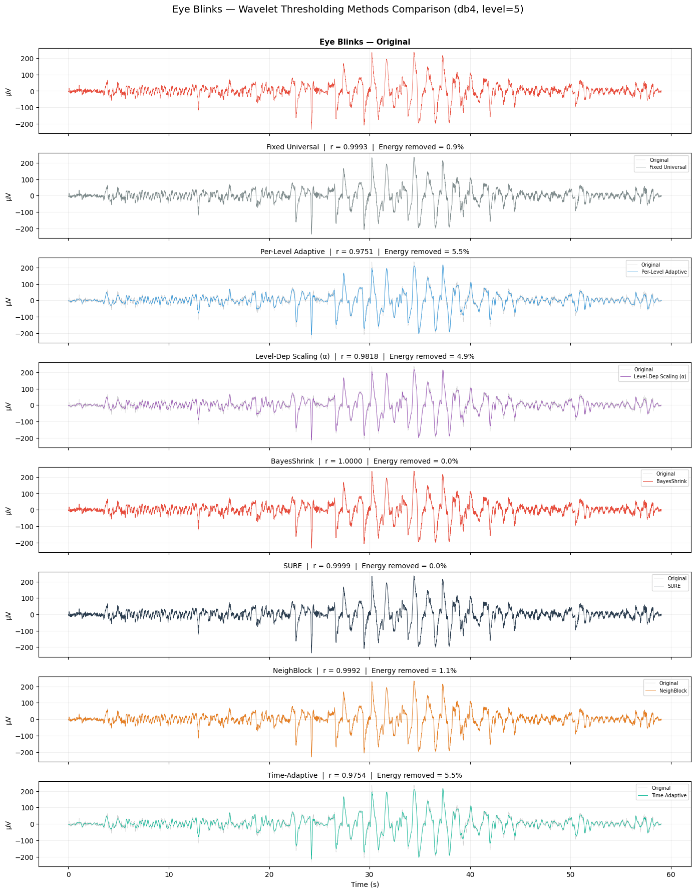
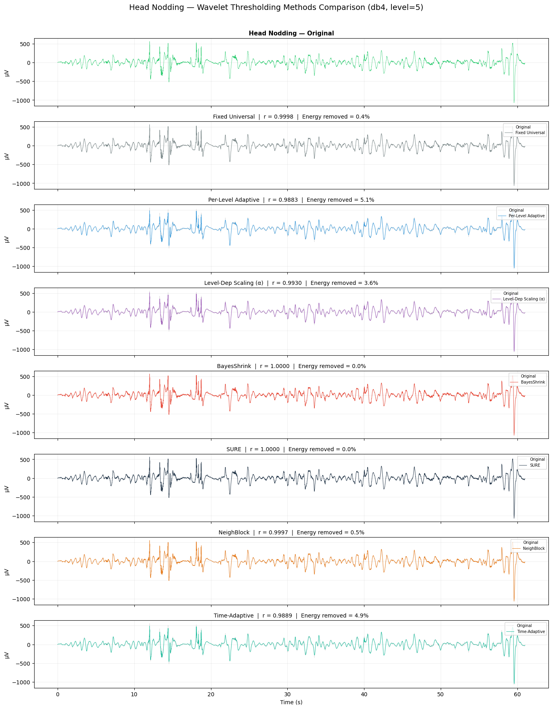
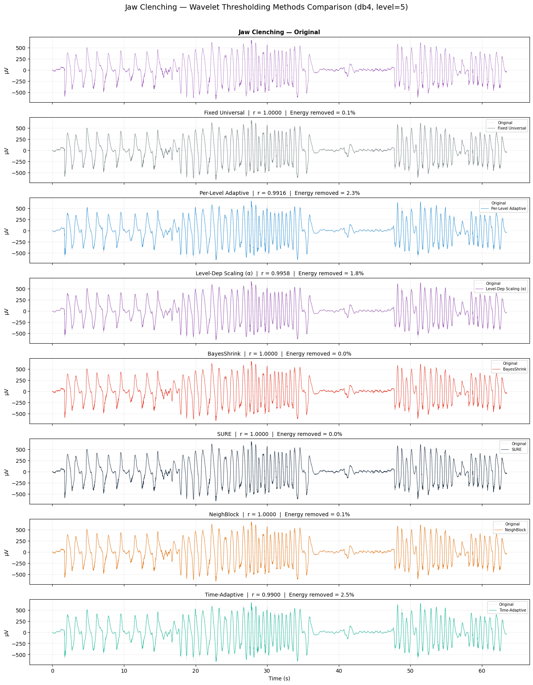
4. EMD — Empirical Mode Decomposition#
EMD decomposes each signal into Intrinsic Mode Functions (IMFs). We reconstruct by removing the first IMF (highest frequency, typically noise/artifact) and summing the rest.
Show code cell source
from scipy.stats import kurtosis
import pandas as pd
def sample_entropy(x, m=2, r_frac=0.2):
x = np.asarray(x, dtype=float)
N = len(x)
r = r_frac * np.std(x)
if r == 0 or N < m + 2:
return 0.0
def _count(tl):
templates = np.lib.stride_tricks.sliding_window_view(x, tl)
count = 0
for i in range(len(templates)):
dists = np.max(np.abs(templates[i] - templates), axis=1)
count += np.sum(dists < r) - 1
return count
A, B = _count(m + 1), _count(m)
if B == 0 or A == 0:
return 0.0
return -np.log(A / B)
def emd_denoise(sig, t, n_remove=1):
"""EMD decomposition, reconstruct by removing first n_remove IMFs."""
emd_obj = EMD()
imfs = emd_obj.emd(sig, t)
reconstructed = np.sum(imfs[n_remove:], axis=0)
return imfs, reconstructed
kurt_threshold = 3.0 # IMFs with |kurtosis| > this are flagged as artifact
emd_results = {}
emd_imfs_all = {}
emd_keep_masks = {}
for name, (sig, t) in artifacts.items():
imfs, _ = emd_denoise(sig, t)
emd_imfs_all[name] = imfs
n_imfs = imfs.shape[0]
# Compute metrics
entropies = [sample_entropy(imf[:300]) for imf in imfs]
kurts = [kurtosis(imf) for imf in imfs]
# Kurtosis-based rejection
kurts_arr = np.array(kurts)
keep_mask = np.abs(kurts_arr) < kurt_threshold
emd_keep_masks[name] = keep_mask
# Reconstruct using only kept IMFs
reconstructed = np.sum(imfs[keep_mask], axis=0)
emd_results[name] = reconstructed
# ── Print table ──────────────────────────────────────────────────
print(f'\n{"="*60}')
print(f' {name} ({n_imfs} IMFs, kurtosis threshold = {kurt_threshold})')
print(f'{"="*60}')
rows = []
for i in range(n_imfs):
tag = "KEEP" if keep_mask[i] else "REJECT"
rows.append({
'IMF': f'IMF {i+1}',
'Sample Entropy': f'{entropies[i]:.4f}',
'Kurtosis': f'{kurts_arr[i]:.4f}',
'Decision': tag,
})
df = pd.DataFrame(rows)
print(df.to_string(index=False))
removed_ids = [str(i+1) for i in range(n_imfs) if not keep_mask[i]]
kept_ids = [str(i+1) for i in range(n_imfs) if keep_mask[i]]
print(f'\nRemoved IMFs: {",".join(removed_ids) if removed_ids else "none"}')
print(f'Kept IMFs: {",".join(kept_ids)}')
# ═══════════════════════════════════════════════════════════════════════
# PLOT IMFs — coloured by keep/reject
# ═══════════════════════════════════════════════════════════════════════
for name, (sig, t) in artifacts.items():
imfs = emd_imfs_all[name]
keep_mask = emd_keep_masks[name]
n_imfs = min(imfs.shape[0], 8)
kurts_arr = np.array([kurtosis(imf) for imf in imfs])
entropies = [sample_entropy(imf[:300]) for imf in imfs]
fig, axes = plt.subplots(n_imfs + 1, 1, figsize=(14, 1.8 * (n_imfs + 1)), sharex=True)
axes[0].plot(t, sig, color=colors[name], linewidth=0.5)
axes[0].set_title(f'Original — {name}', fontsize=10, fontweight='bold')
axes[0].set_ylabel('µV')
for i in range(n_imfs):
f_psd, psd = welch(imfs[i], fs=fs, nperseg=min(512, len(imfs[i])))
dom_freq = f_psd[np.argmax(psd)]
energy_pct = np.sum(imfs[i]**2) / np.sum(sig**2) * 100
is_artifact = not keep_mask[i]
color = '#e74c3c' if is_artifact else 'teal'
tag = 'REJECT' if is_artifact else 'KEEP'
axes[i+1].plot(t, imfs[i], color=color, linewidth=0.5)
axes[i+1].set_title(
f'IMF {i+1} | {dom_freq:.1f} Hz | {energy_pct:.1f}% | '
f'Kurt={kurts_arr[i]:.2f} SampEn={entropies[i]:.3f} [{tag}]',
fontsize=9)
axes[i+1].set_ylabel('µV', fontsize=8)
axes[-1].set_xlabel('Time (s)')
fig.suptitle(f'EMD — {name} (red = artifact, teal = kept)', fontsize=13, y=1.01)
plt.tight_layout()
plt.show()
# ═══════════════════════════════════════════════════════════════════════
# PLOT: Original vs Cleaned for each artifact
# ═══════════════════════════════════════════════════════════════════════
fig, axes = plt.subplots(3, 1, figsize=(14, 10))
for ax, (name, (sig, t)) in zip(axes, artifacts.items()):
recon = emd_results[name]
keep_mask = emd_keep_masks[name]
kept_ids = ",".join(str(i+1) for i in range(len(keep_mask)) if keep_mask[i])
removed_ids = ",".join(str(i+1) for i in range(len(keep_mask)) if not keep_mask[i])
corr = np.corrcoef(sig, recon)[0, 1]
energy_removed = (1 - np.sum(recon**2) / np.sum(sig**2)) * 100
ax.plot(t, sig, color='gray', linewidth=0.4, alpha=0.6, label='Original')
ax.plot(t, recon, color=colors[name], linewidth=0.8, label='EMD cleaned')
ax.set_title(
f'{name} | Removed IMF: {removed_ids if removed_ids else "none"} | '
f'r = {corr:.4f} | Energy removed = {energy_removed:.1f}%',
fontsize=11)
ax.set_ylabel('µV')
ax.legend(fontsize=9)
ax.grid(alpha=0.2)
axes[-1].set_xlabel('Time (s)')
fig.suptitle('EMD Artifact Rejection (Kurtosis-based)', fontsize=14, y=1.01)
plt.tight_layout()
plt.show()
# ═══════════════════════════════════════════════════════════════════════
# PLOT: Removed components
# ═══════════════════════════════════════════════════════════════════════
fig, axes = plt.subplots(3, 1, figsize=(14, 8))
for ax, (name, (sig, t)) in zip(axes, artifacts.items()):
removed = sig - emd_results[name]
ax.plot(t, removed, color='#e74c3c', linewidth=0.5, alpha=0.8)
ax.set_title(f'{name} — Removed Component', fontsize=11)
ax.set_ylabel('µV')
ax.grid(alpha=0.2)
axes[-1].set_xlabel('Time (s)')
fig.suptitle('EMD — Removed Artifact Components', fontsize=13, y=1.01)
plt.tight_layout()
plt.show()
============================================================
Eye Blinks (11 IMFs, kurtosis threshold = 3.0)
============================================================
IMF Sample Entropy Kurtosis Decision
IMF 1 0.7472 1.5909 KEEP
IMF 2 0.6493 5.7855 REJECT
IMF 3 0.4762 8.7191 REJECT
IMF 4 0.4106 4.3207 REJECT
IMF 5 0.1033 3.9558 REJECT
IMF 6 0.0299 2.0816 KEEP
IMF 7 0.0124 1.4403 KEEP
IMF 8 0.0117 0.9788 KEEP
IMF 9 0.0044 -0.7330 KEEP
IMF 10 0.0054 -1.0652 KEEP
IMF 11 0.0035 -0.4127 KEEP
Removed IMFs: 2,3,4,5
Kept IMFs: 1,6,7,8,9,10,11
============================================================
Head Nodding (12 IMFs, kurtosis threshold = 3.0)
============================================================
IMF Sample Entropy Kurtosis Decision
IMF 1 0.5806 45.6429 REJECT
IMF 2 0.5745 37.0536 REJECT
IMF 3 0.5313 22.4757 REJECT
IMF 4 0.5055 10.3432 REJECT
IMF 5 0.2955 9.9050 REJECT
IMF 6 0.1107 6.4015 REJECT
IMF 7 0.0312 3.2071 REJECT
IMF 8 0.0180 2.6187 KEEP
IMF 9 0.0046 0.1526 KEEP
IMF 10 0.0065 -0.0965 KEEP
IMF 11 0.0109 0.2797 KEEP
IMF 12 0.0075 -1.5940 KEEP
Removed IMFs: 1,2,3,4,5,6,7
Kept IMFs: 8,9,10,11,12
============================================================
Jaw Clenching (11 IMFs, kurtosis threshold = 3.0)
============================================================
IMF Sample Entropy Kurtosis Decision
IMF 1 0.7158 17.6427 REJECT
IMF 2 0.7368 13.4867 REJECT
IMF 3 0.5866 12.4319 REJECT
IMF 4 0.4213 12.4995 REJECT
IMF 5 0.1808 1.8505 KEEP
IMF 6 0.1134 0.9264 KEEP
IMF 7 0.0103 0.1646 KEEP
IMF 8 0.0106 -0.7108 KEEP
IMF 9 0.0054 -0.6457 KEEP
IMF 10 0.0104 -0.8203 KEEP
IMF 11 0.0035 -1.0683 KEEP
Removed IMFs: 1,2,3,4
Kept IMFs: 5,6,7,8,9,10,11
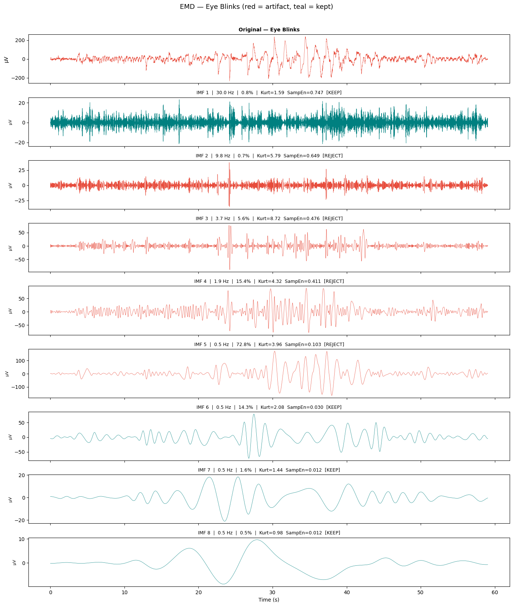
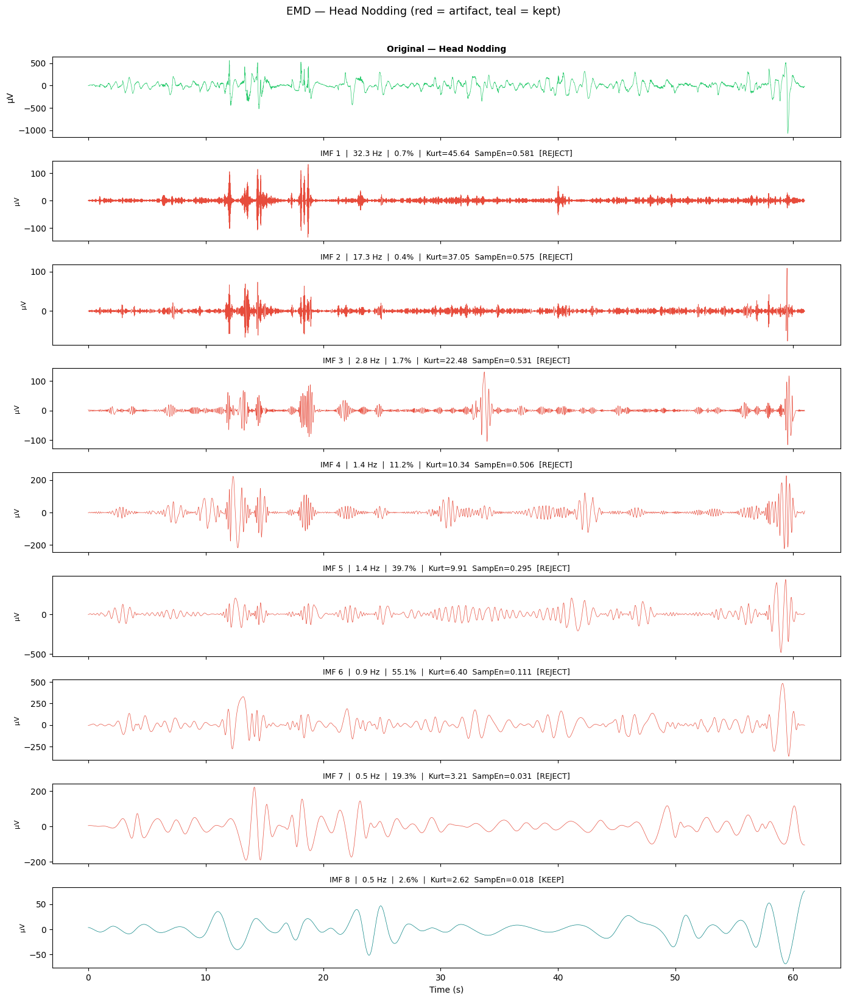
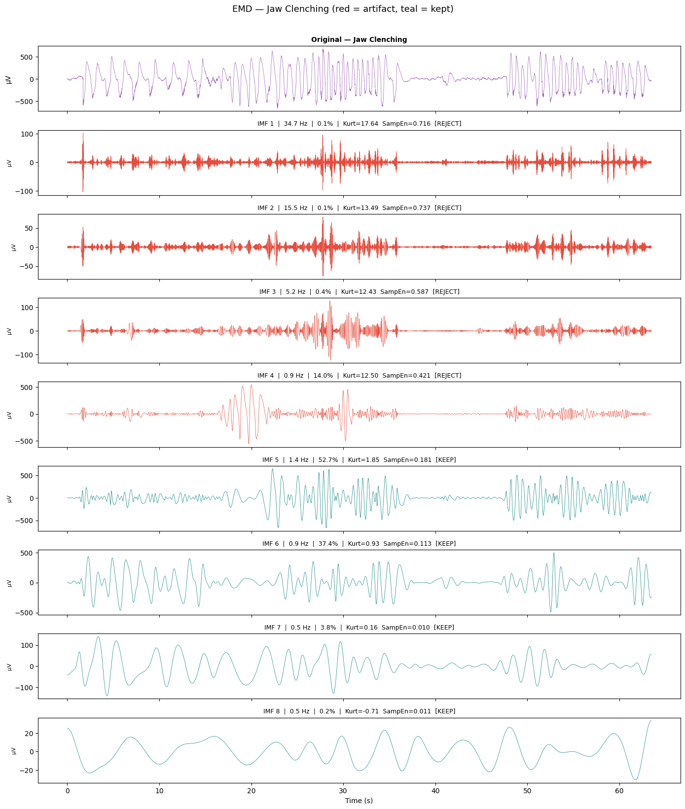
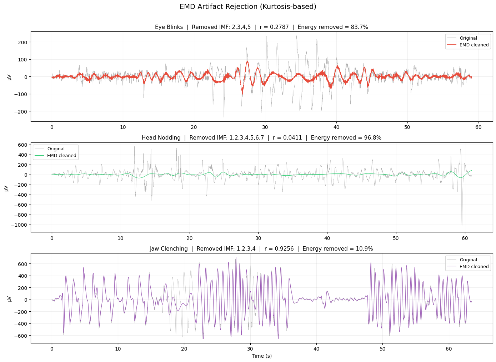
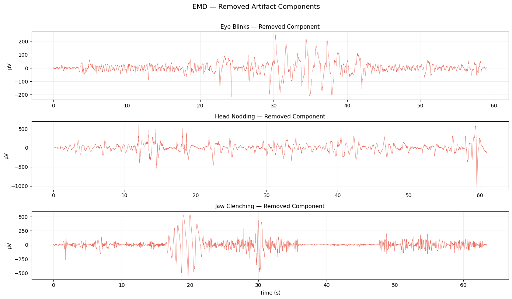
5. EEMD — Ensemble EMD#
EEMD adds white noise across multiple trials and averages the IMFs to reduce mode mixing. We use 50 trials with noise width 0.1.
Show code cell source
def eemd_denoise(sig, t, n_remove=1):
"""EEMD decomposition, reconstruct by removing first n_remove IMFs."""
eemd = EEMD(trials=50, noise_width=0.1)
imfs = eemd.eemd(sig, t)
reconstructed = np.sum(imfs[n_remove:], axis=0)
return imfs, reconstructed
eemd_results = {}
eemd_imfs_all = {}
for name, (sig, t) in artifacts.items():
imfs, recon = eemd_denoise(sig, t)
eemd_imfs_all[name] = imfs
eemd_results[name] = recon
print(f'{name}: {imfs.shape[0]} IMFs extracted')
# Plot IMFs for each artifact
for name, (sig, t) in artifacts.items():
imfs = eemd_imfs_all[name]
n_imfs = min(imfs.shape[0], 8)
fig, axes = plt.subplots(n_imfs + 1, 1, figsize=(14, 1.8 * (n_imfs + 1)), sharex=True)
axes[0].plot(t, sig, color=colors[name], linewidth=0.5)
axes[0].set_title(f'Original — {name}', fontsize=10, fontweight='bold')
axes[0].set_ylabel('µV')
for i in range(n_imfs):
f_psd, psd = welch(imfs[i], fs=fs, nperseg=min(512, len(imfs[i])))
dom_freq = f_psd[np.argmax(psd)]
energy_pct = np.sum(imfs[i]**2) / np.sum(sig**2) * 100
axes[i+1].plot(t, imfs[i], color=plt.cm.tab10(i), linewidth=0.5)
axes[i+1].set_title(f'IMF {i+1} | {dom_freq:.1f} Hz | {energy_pct:.1f}%',
fontsize=9)
axes[i+1].set_ylabel('µV', fontsize=8)
axes[-1].set_xlabel('Time (s)')
fig.suptitle(f'EEMD — {name}', fontsize=13, y=1.01)
plt.tight_layout()
plt.show()
Eye Blinks: 13 IMFs extracted
Head Nodding: 13 IMFs extracted
Jaw Clenching: 14 IMFs extracted
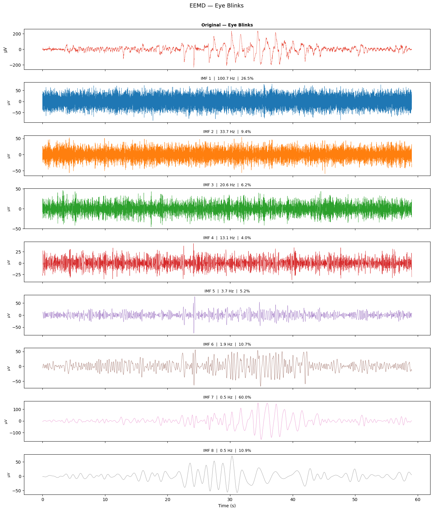
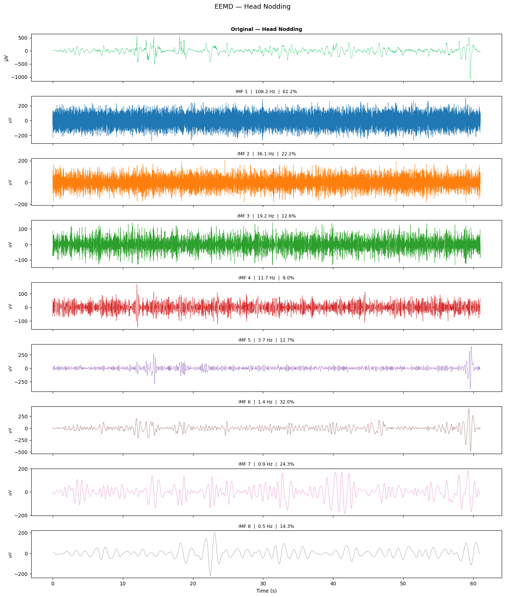
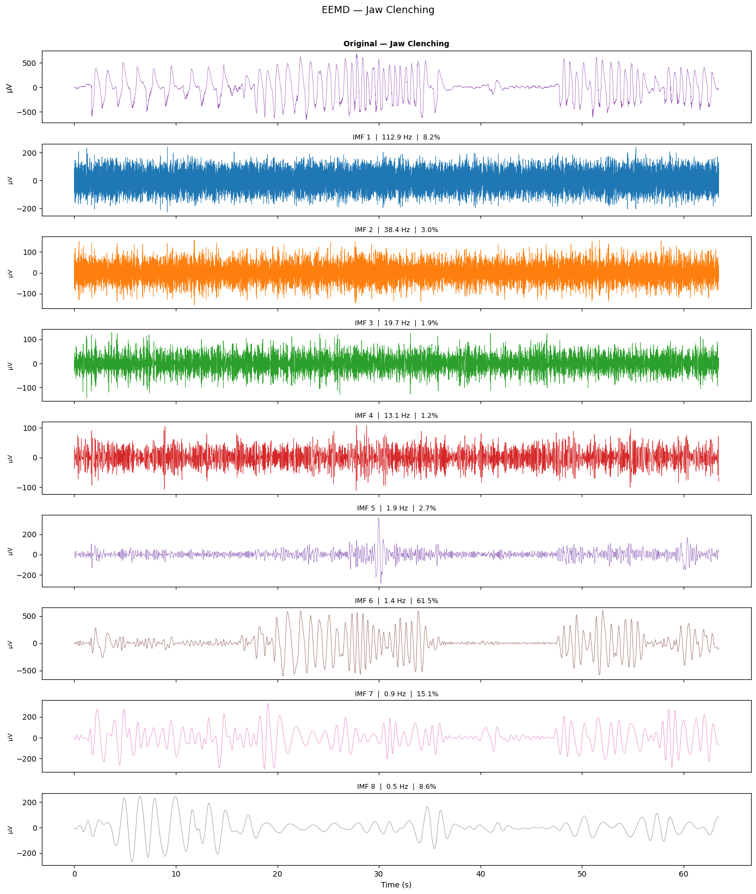
6. CEEMDAN — Complete Ensemble EMD with Adaptive Noise#
CEEMDAN adds adaptive noise at each decomposition stage (not just once), giving better reconstruction and less residual noise than EEMD.
Show code cell content
def ceemdan_denoise(sig, t, n_remove=1):
"""CEEMDAN decomposition, reconstruct by removing first n_remove IMFs."""
ceemdan = CEEMDAN(trials=30, epsilon=0.1)
ceemdan.noise_seed(42)
ceemdan.processes = 1 # avoid multiprocessing memory issue
imfs = ceemdan.ceemdan(sig, t)
reconstructed = np.sum(imfs[n_remove:], axis=0)
return imfs, reconstructed
ceemdan_results = {}
ceemdan_imfs_all = {}
for name, (sig, t) in artifacts.items():
imfs, recon = ceemdan_denoise(sig, t)
ceemdan_imfs_all[name] = imfs
ceemdan_results[name] = recon
print(f'{name}: {imfs.shape[0]} IMFs extracted')
# Plot IMFs for each artifact
for name, (sig, t) in artifacts.items():
imfs = ceemdan_imfs_all[name]
n_imfs = min(imfs.shape[0], 8)
fig, axes = plt.subplots(n_imfs + 1, 1, figsize=(14, 1.8 * (n_imfs + 1)), sharex=True)
axes[0].plot(t, sig, color=colors[name], linewidth=0.5)
axes[0].set_title(f'Original — {name}', fontsize=10, fontweight='bold')
axes[0].set_ylabel('µV')
for i in range(n_imfs):
f_psd, psd = welch(imfs[i], fs=fs, nperseg=min(512, len(imfs[i])))
dom_freq = f_psd[np.argmax(psd)]
energy_pct = np.sum(imfs[i]**2) / np.sum(sig**2) * 100
axes[i+1].plot(t, imfs[i], color=plt.cm.tab10(i), linewidth=0.5)
axes[i+1].set_title(f'IMF {i+1} | {dom_freq:.1f} Hz | {energy_pct:.1f}%',
fontsize=9)
axes[i+1].set_ylabel('µV', fontsize=8)
axes[-1].set_xlabel('Time (s)')
fig.suptitle(f'CEEMDAN — {name}', fontsize=13, y=1.01)
plt.tight_layout()
plt.show()
Eye Blinks: 13 IMFs extracted
Head Nodding: 11 IMFs extracted
Jaw Clenching: 12 IMFs extracted
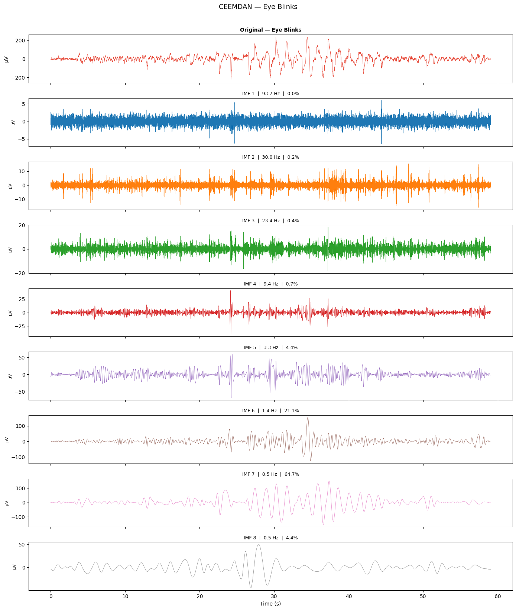
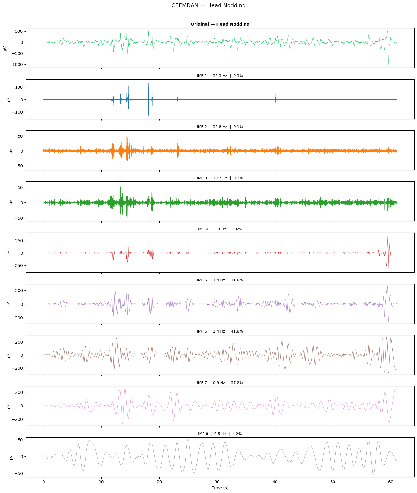
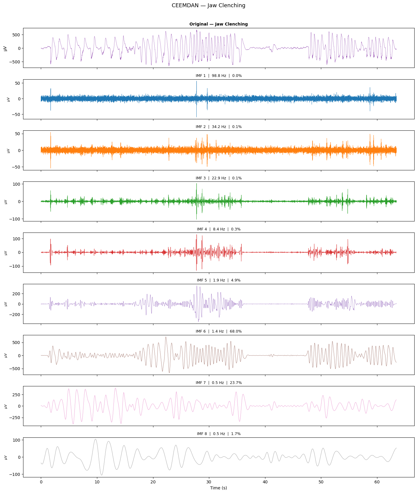
7. VMD — Variational Mode Decomposition#
VMD is optimization-based — we specify K=5 modes targeting the main EEG bands. We reconstruct by removing mode 1 (highest center frequency, typically artifact/noise).
Show code cell content
K = 5
alpha = 2000
tau = 0
DC = 0
init = 1
tol = 1e-7
def vmd_denoise(sig, n_remove=1):
"""VMD decomposition, reconstruct by removing first n_remove modes."""
modes, freqs, _ = VMD(sig, alpha, tau, K, DC, init, tol)
# Sort modes by center frequency (ascending)
order = np.argsort(freqs[-1])
modes = modes[order]
freqs_sorted = freqs[:, order]
# Remove the highest-frequency mode(s)
reconstructed = np.sum(modes[:-n_remove], axis=0)
return modes, freqs_sorted, reconstructed
vmd_results = {}
vmd_modes_all = {}
vmd_freqs_all = {}
for name, (sig, t) in artifacts.items():
modes, freqs, recon = vmd_denoise(sig)
vmd_modes_all[name] = modes
vmd_freqs_all[name] = freqs
# Trim to match (VMD can drop 1 sample)
vmd_results[name] = recon[:len(sig)] if len(recon) >= len(sig) else np.pad(recon, (0, len(sig)-len(recon)), mode='edge')
print(f'{name}: {K} modes, center freqs = '
f'{["{:.1f}".format(f*fs) for f in freqs[-1]]}')
# Plot modes for each artifact
for name, (sig, t) in artifacts.items():
modes = vmd_modes_all[name]
freqs = vmd_freqs_all[name]
t_vmd = t[:modes.shape[1]]
fig, axes = plt.subplots(K + 1, 1, figsize=(14, 1.8 * (K + 1)), sharex=True)
axes[0].plot(t_vmd, sig[:len(t_vmd)], color=colors[name], linewidth=0.5)
axes[0].set_title(f'Original — {name}', fontsize=10, fontweight='bold')
axes[0].set_ylabel('µV')
colors_vmd = ['#e74c3c', '#2ecc71', '#9b59b6', '#f39c12', '#1abc9c']
for i in range(K):
f_psd, psd = welch(modes[i], fs=fs, nperseg=min(512, len(modes[i])))
dom_freq = f_psd[np.argmax(psd)]
energy_pct = np.sum(modes[i]**2) / np.sum(sig[:len(t_vmd)]**2) * 100
axes[i+1].plot(t_vmd, modes[i], color=colors_vmd[i], linewidth=0.5)
axes[i+1].set_title(
f'Mode {i+1} | Center: {freqs[-1, i]*fs:.1f} Hz | '
f'PSD peak: {dom_freq:.1f} Hz | {energy_pct:.1f}%',
fontsize=9)
axes[i+1].set_ylabel('µV', fontsize=8)
axes[-1].set_xlabel('Time (s)')
fig.suptitle(f'VMD — {name} (K={K}, α={alpha})', fontsize=13, y=1.01)
plt.tight_layout()
plt.show()
Eye Blinks: 5 modes, center freqs = ['-244.9+0.1j', '-190.9+0.0j', '-189.3+0.0j', '-15.3+0.0j', '580.2-0.1j']
Head Nodding: 5 modes, center freqs = ['-933.9+0.2j', '-897.8+0.2j', '97.6-0.0j', '255.3-0.1j', '3500.7-0.8j']
Jaw Clenching: 5 modes, center freqs = ['-11067.8+2.3j', '-906.2+0.2j', '-719.2+0.1j', '645.2-0.1j', '15704.1-3.2j']
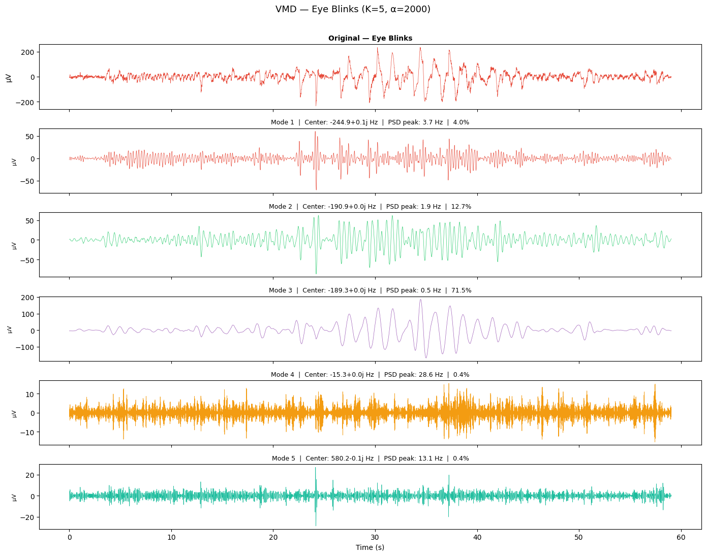
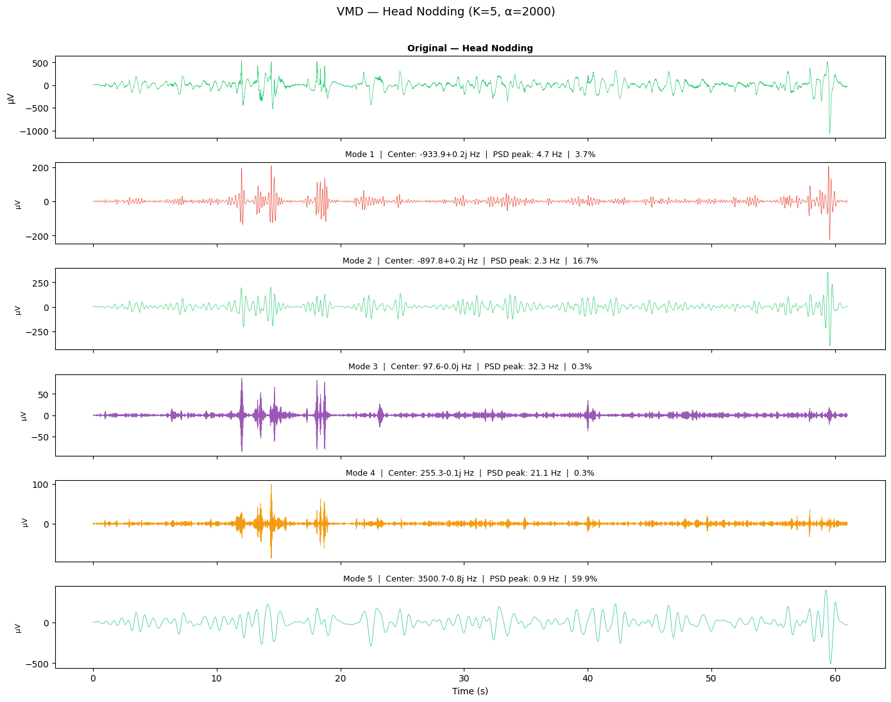
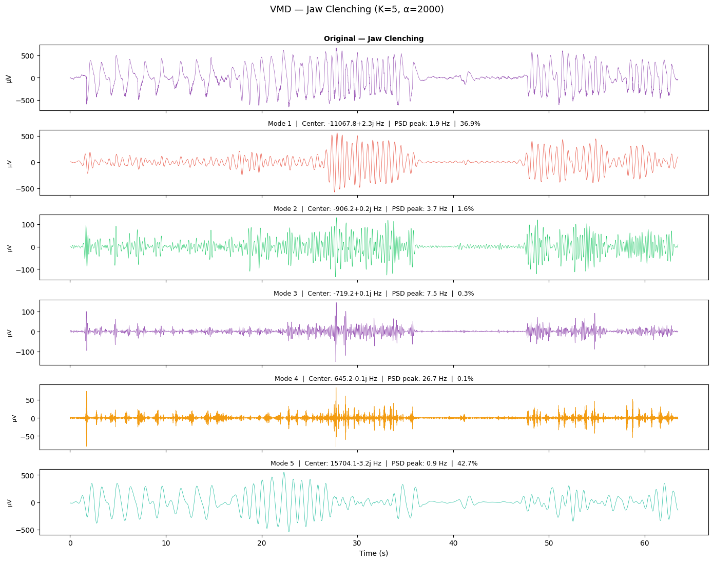
8. Comparison — Original vs All Reconstructed Signals#
For each artifact type, we overlay the original signal with the reconstructed (denoised) signal from all five methods. This lets us visually compare how aggressively each method removes the artifact and how much neural signal is preserved.
Show code cell source
method_colors = {
'WT': '#3498db',
'EMD': '#e67e22',
'EEMD': '#2ecc71',
'CEEMDAN': '#9b59b6',
'VMD': '#e74c3c',
}
for name, (sig, t) in artifacts.items():
fig, axes = plt.subplots(6, 1, figsize=(14, 14), sharex=True)
# Original
axes[0].plot(t, sig, color='gray', linewidth=0.5)
axes[0].set_title(f'{name} — Original', fontsize=11, fontweight='bold')
axes[0].set_ylabel('µV')
axes[0].grid(alpha=0.2)
# Each method
all_recons = {
'WT': wt_results[name],
'EMD': emd_results[name],
'EEMD': eemd_results[name],
'CEEMDAN': ceemdan_results[name],
'VMD': vmd_results[name],
}
for ax, (method, recon) in zip(axes[1:], all_recons.items()):
# Trim to common length
n = min(len(sig), len(recon))
ax.plot(t[:n], sig[:n], color='gray', linewidth=0.3, alpha=0.5, label='Original')
ax.plot(t[:n], recon[:n], color=method_colors[method], linewidth=0.7,
label=f'{method} reconstructed')
ax.set_title(f'{method}', fontsize=11)
ax.set_ylabel('µV')
ax.legend(fontsize=8, loc='upper right')
ax.grid(alpha=0.2)
axes[-1].set_xlabel('Time (s)')
fig.suptitle(f'{name} — Original vs Reconstructed (All Methods)',
fontsize=14, y=1.01)
plt.tight_layout()
plt.show()
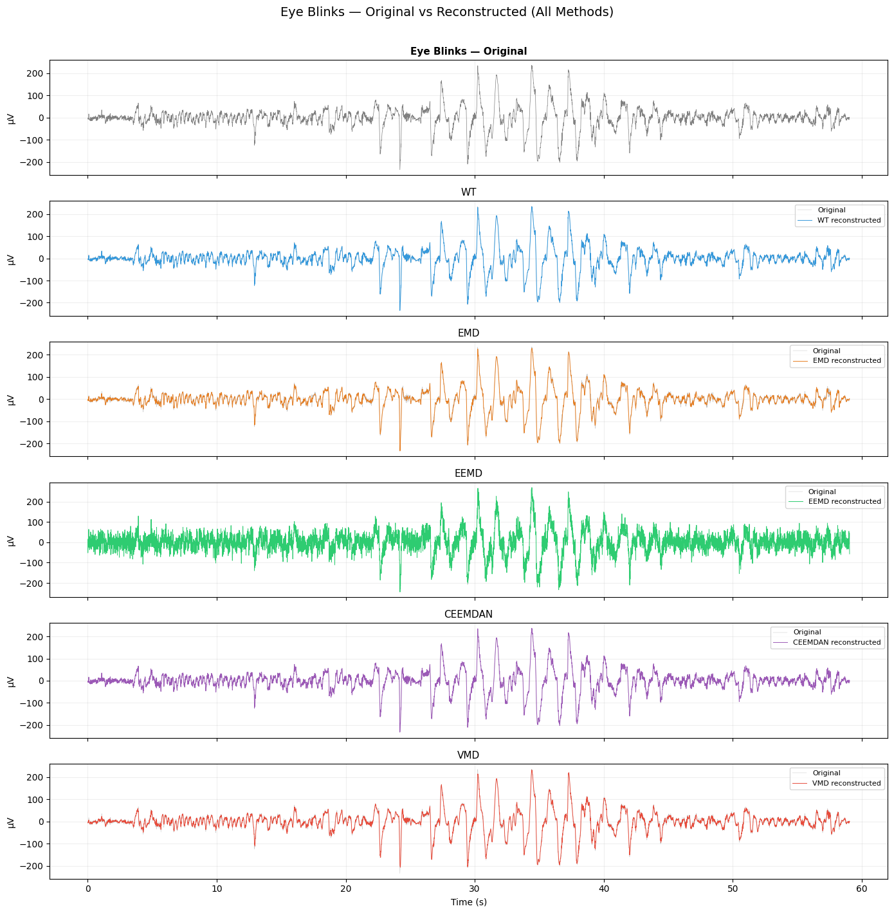
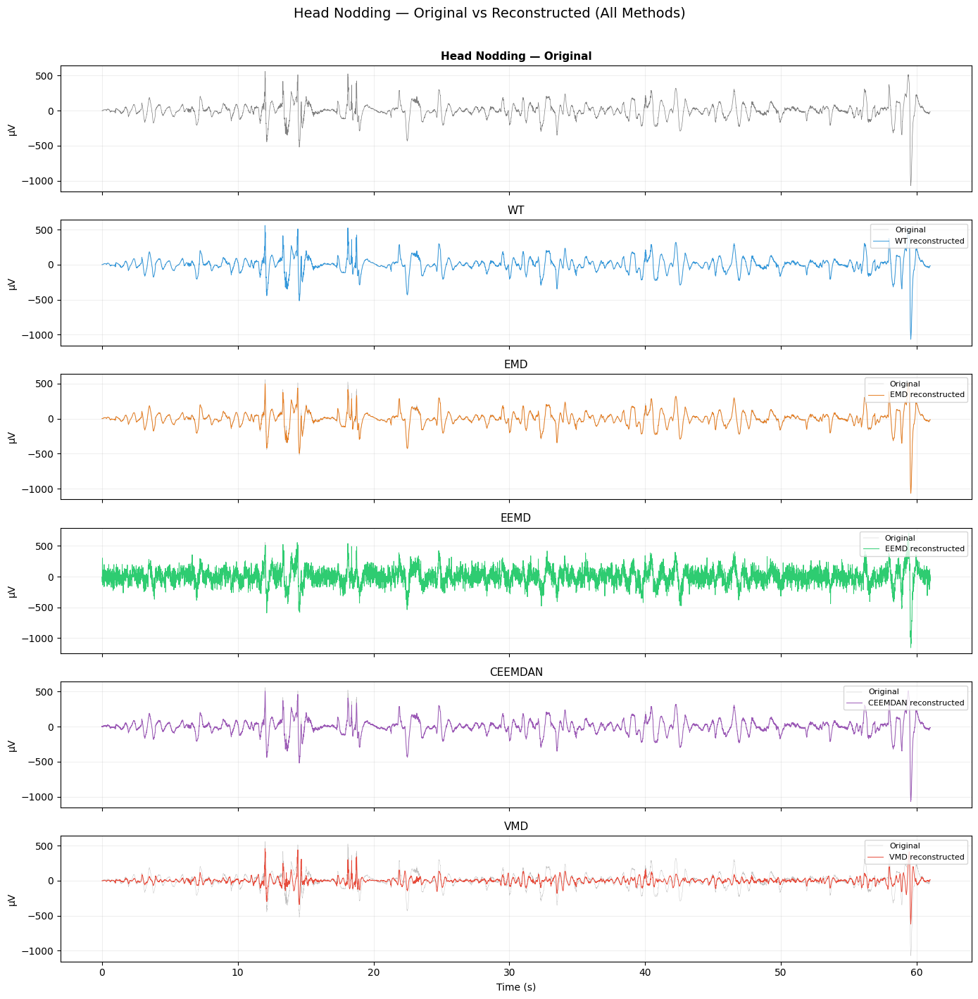
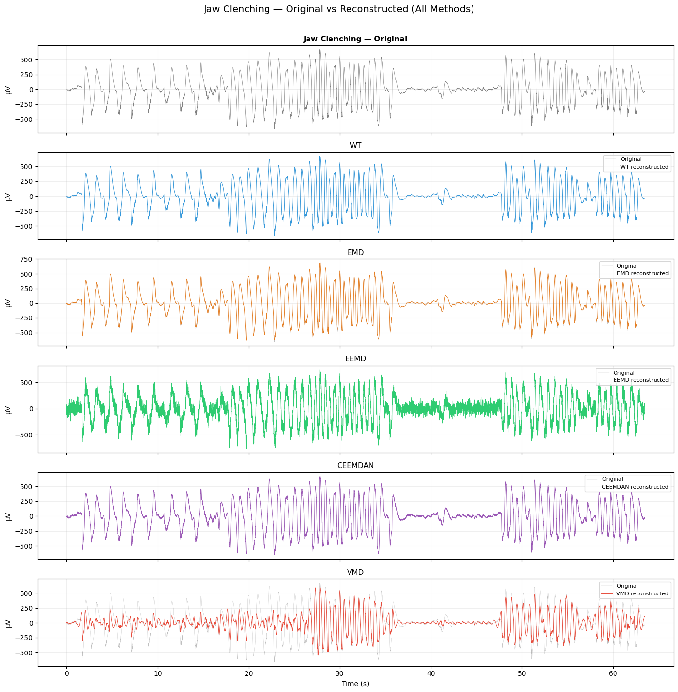
9. Quantitative Comparison#
We compute the energy removed and correlation with original for each method on each artifact type. Higher energy removal suggests more aggressive artifact suppression; high correlation means the overall signal shape is preserved.
Show code cell source
print(f'{"Artifact":<18} {"Method":<10} {"Energy Removed (%)":>20} {"Correlation":>14}')
print('=' * 65)
all_methods = {
'WT': wt_results,
'EMD': emd_results,
'EEMD': eemd_results,
'CEEMDAN': ceemdan_results,
'VMD': vmd_results,
}
for name, (sig, t) in artifacts.items():
for method, results in all_methods.items():
recon = results[name]
n = min(len(sig), len(recon))
orig, rec = sig[:n], recon[:n]
energy_removed = (1 - np.sum(rec**2) / np.sum(orig**2)) * 100
corr = np.corrcoef(orig, rec)[0, 1]
print(f'{name:<18} {method:<10} {energy_removed:>18.1f}% {corr:>14.4f}')
print('-' * 65)
Artifact Method Energy Removed (%) Correlation
=================================================================
Eye Blinks WT 0.9% 0.9993
Eye Blinks EMD 0.8% 0.9958
Eye Blinks EEMD -21.8% 0.9079
Eye Blinks CEEMDAN 0.1% 0.9998
Eye Blinks VMD 2.1% 0.9962
-----------------------------------------------------------------
Head Nodding WT 0.4% 0.9998
Head Nodding EMD 0.7% 0.9964
Head Nodding EEMD -48.0% 0.8202
Head Nodding CEEMDAN 0.4% 0.9983
Head Nodding VMD 76.1% 0.6480
-----------------------------------------------------------------
Jaw Clenching WT 0.1% 1.0000
Jaw Clenching EMD 0.0% 0.9993
Jaw Clenching EEMD -6.6% 0.9666
Jaw Clenching CEEMDAN 0.0% 0.9998
Jaw Clenching VMD 59.3% 0.7664
-----------------------------------------------------------------
References#
Huang et al., 1998 — The Empirical Mode Decomposition (EMD)
Wu & Huang, 2009 — Ensemble EMD (EEMD)
Torres et al., 2011 — CEEMDAN
Dragomiretskiy & Zosso, 2014 — Variational Mode Decomposition (VMD)